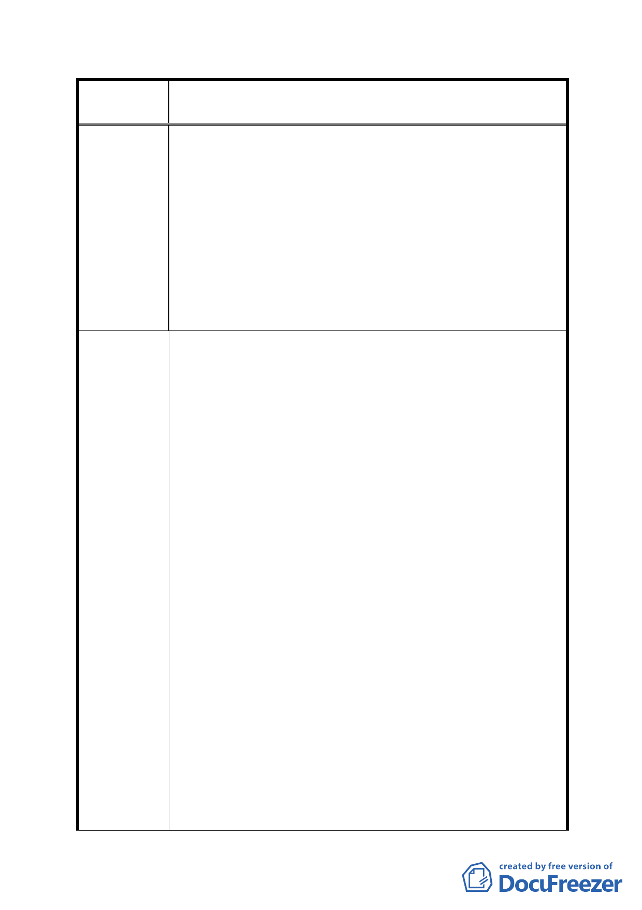

案
名
修訂臺北市「基隆河（中山橋至成美橋段）附近地區土地使
用分區與都市設計管制要點」（北段地區）計畫案
年臺北好好看」之新開發案沒有獎勵容積，若考量做娛樂
商業購物使用，難以超過 60 公尺。應放寬之建築物高度
規定；而不應提出商業區(供商業購物中心使用)及娛樂區
（供娛樂購物中心使用），建築高度以不低於 60 公尺為
原則之規定。
六、騎樓、迴廊及無遮簷人行道：
本計畫區為建築底層的開放空間與商業活動，商業活動以
零售商業為主，開放空間以地面層開放空間為主要活動範
圍，因此向東延伸之立體連通系統實質效益不大，故應取
消此項規定。
一、土地及建築物之使用：
應修訂商業使用比例，管制商業使用容積總量。原細部計
畫內做指定使用項目之面積應達申請基地總樓地板面積
1/2 以上。但考慮商業使用量下降，以及扣除梯廳、機電
設備等空間，建議修正為：於建築物低層部商業使用容積
不得低於基地法定容積率之 1/4，為建築物底層部三層樓
設置商業空間。
二、土地使用強度之建蔽率
建議辦法
細部計畫管制該計畫區土地及建築物使用、建蔽率及容積
率。為鼓勵留設公共開放空間，應只規範最大建蔽率，不
應限定最小建蔽率，並鼓勵業者提供優質的公共開放空
間。
三、建築物立面寬度 :
建議整合位於大彎北段參與「促進都市再生 2010 年臺北
好好看」之 11 個案，各案建築物錯落配置，以維持本地
區山系視覺廊道。
四、建築容積：
提經臺北市政府「促進都市再生 2010 年臺北好好看」審
查委員會審查同意適用容積獎勵機制，且依都市設計審議
確認其公共性與容積獎勵。並不得依細部計畫通盤檢討限
定參與「促進都市再生 2010 年臺北好好看」之個案的容
積上限。
五、建築物高度 :
- 89 -